Marrakech
Between the medina and the desert
Between palaces, riads, lush gardens and the Atlas Mountains, discover a city where every narrow street reveals a new side of Morocco.
Lose yourself among lively alleyways, artisan stalls and the unique atmosphere of Marrakech's historic old town.
Set off towards the Agafay Desert, Berber villages and the peaks of the Atlas Mountains, just a short distance from Marrakech.
Tagines, couscous, Moroccan pastries, mint tea and rooftop restaurants offer a true immersion into the city's culinary culture.
From the Majorelle Garden and Bahia Palace to traditional riads, Marrakech reveals all the elegance and refinement of Morocco.
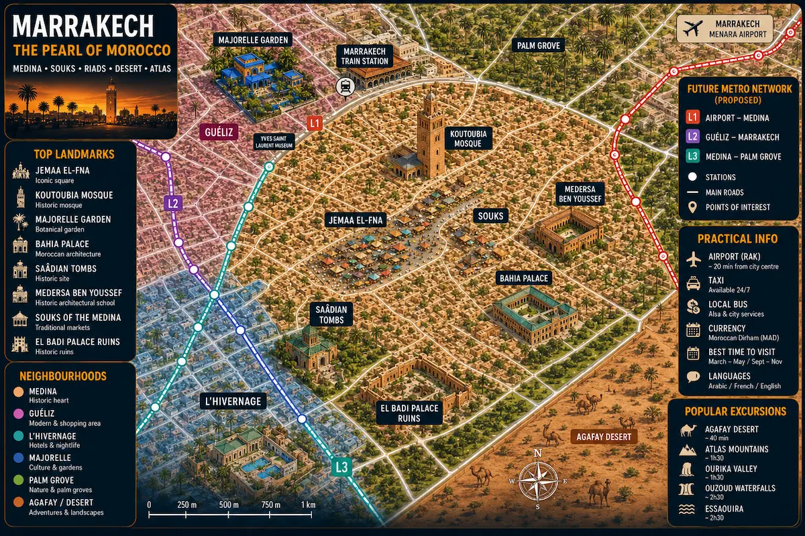
Marrakech is a city to experience as much as to visit. From the silence of the desert at sunrise and the peaks of the Atlas Mountains to spice-filled souks, traditional hammams and dinners beneath the stars, every day brings a new adventure. Authentic experiences that make the Red City one of Morocco's most captivating destinations.
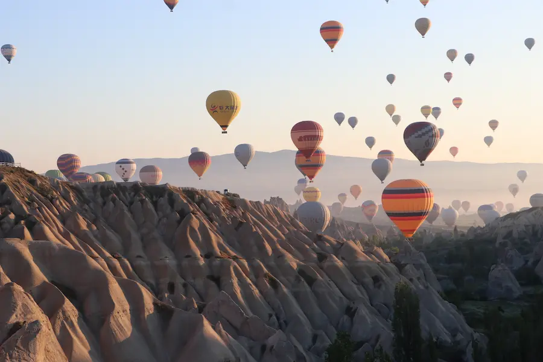
Watch the rising sun slowly illuminate the desert and the Atlas Mountains as the balloon lifts into complete silence. The experience ends with a traditional Berber breakfast and a commemorative certificate.
🎈 Book the flight →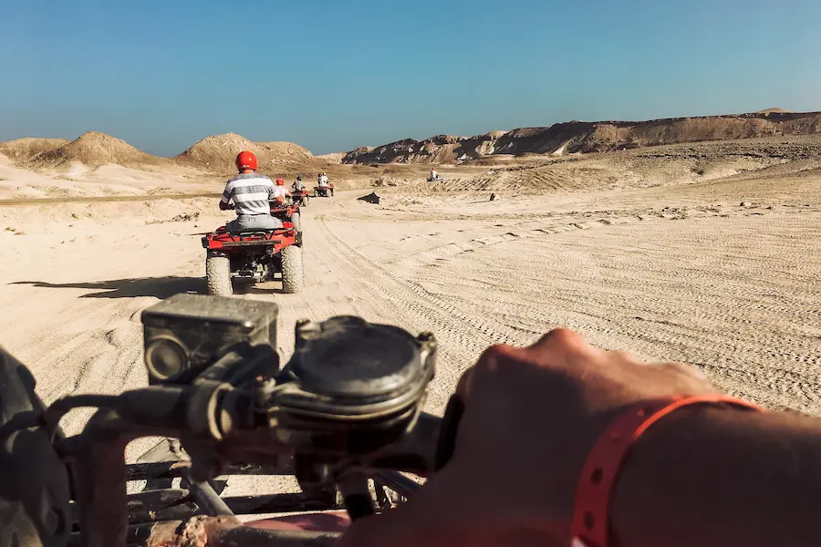
Ride across the desert tracks by quad bike, enjoy a camel ride at sunset, then share a traditional Berber dinner accompanied by music and live entertainment beneath the stars. One of Marrakech's most iconic experiences.
🐪 Discover Agafay →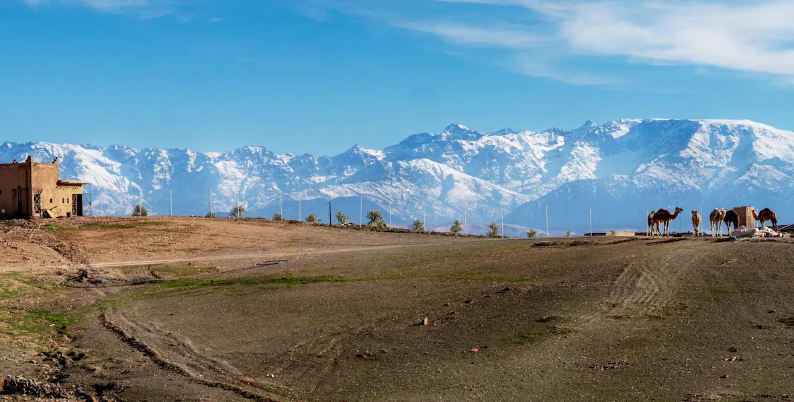
Discover Berber villages, the waterfalls of the Ourika Valley and the spectacular landscapes of the High Atlas. A day of nature, hiking and Moroccan traditions, far from the bustle of the medina.
⛰️ Explore the Atlas Mountains →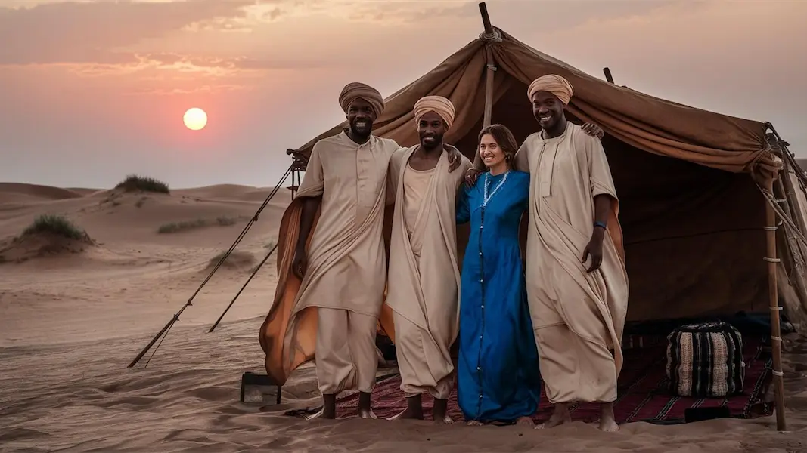
Cross the Atlas Mountains towards the golden dunes of Merzouga, enjoy a camel ride and spend the night in a Berber camp beneath a sky filled with stars. An unforgettable three-day adventure.
🏜️ Journey into the Sahara →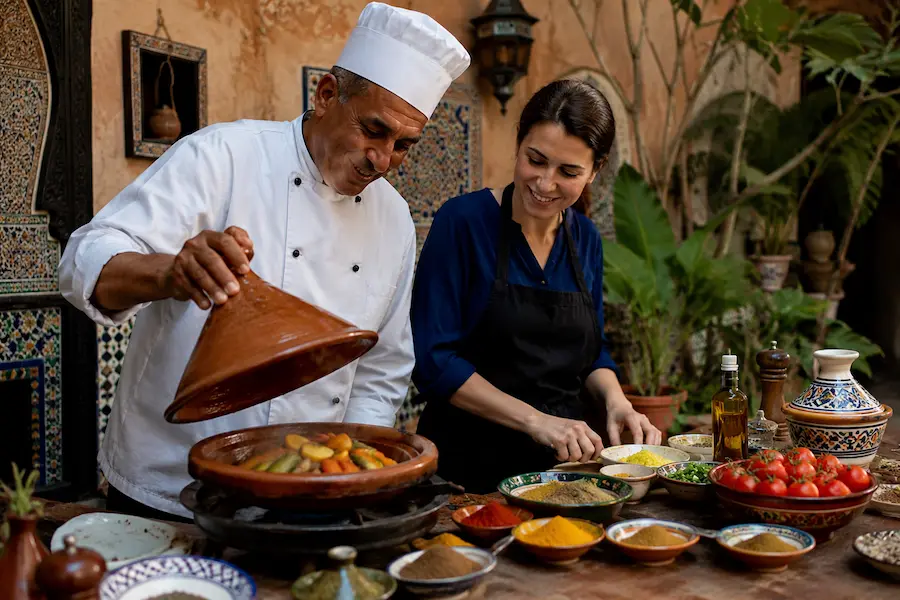
Accompanied by a local chef, discover Moroccan spices, visit the market and prepare a traditional tagine before sharing the meal in a warm and welcoming atmosphere. A delicious immersion into Moroccan culture.
🍲 Join the cooking class →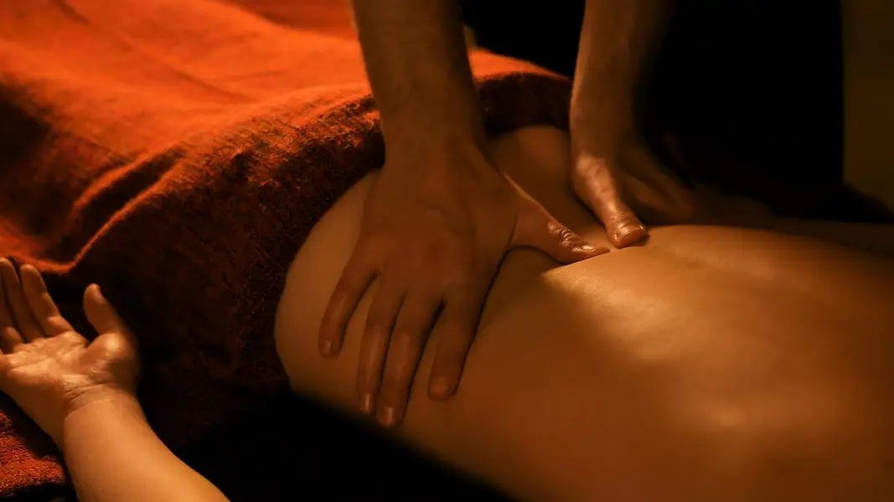
Treat yourself to a moment of complete relaxation with a traditional hammam, a black-soap body scrub and a soothing massage. An ancestral ritual that forms an essential part of the Moroccan way of life.
🧖 Book the hammam →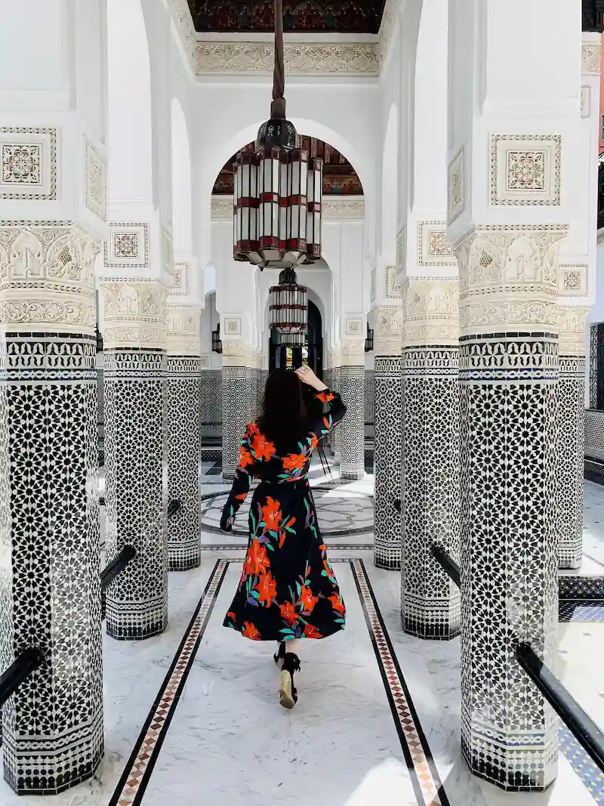
Discover Bahia Palace, Ben Youssef Madrasa and the lively alleyways of the souks with a local guide. A fascinating immersion into the history, architecture and traditions of Marrakech.
🕌 Visit the medina →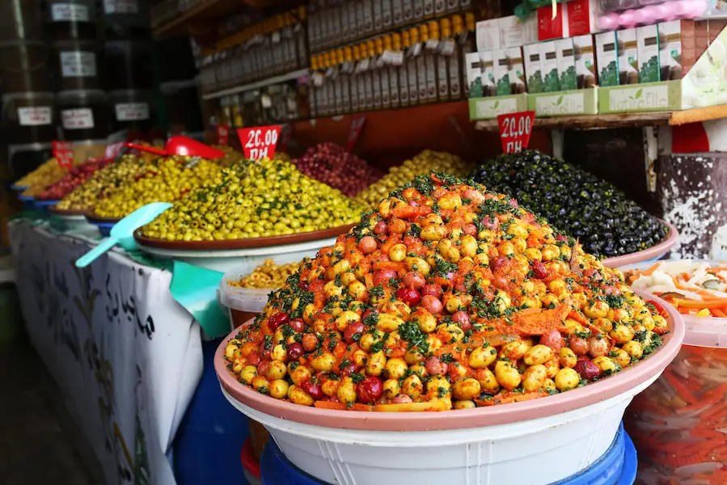
Wander through the medina's narrow streets to meet local artisans and explore fragrant market stalls while tasting tagines, Moroccan pastries, olives, mint tea and regional specialities during a true culinary adventure.
🍢 Discover the food tour →From the medina and modern neighbourhoods to lush gardens and excursions into the Atlas Mountains or the desert, Marrakech is easy to explore on foot, by taxi or with the city's transport services.
Most of the main sights in the old city are within walking distance. Wandering through the souks, exploring the narrow alleyways and reaching Jemaa el-Fna Square are all part of the Marrakech experience.
Petit taxis are the quickest way to reach Gueliz, Hivernage, the gardens or the Palmeraie. Remember to ask the driver to use the meter or agree on the fare before your journey begins.
The Alsa bus network serves the city's main neighbourhoods, while organised excursions with hotel pick-up make it easy to discover the Atlas Mountains, Essaouira, Ouarzazate and the Agafay Desert.
Discover the network →Marrakech-Menara Airport is located just a few kilometres from the city centre. A private transfer is the easiest way to reach your hotel or riad without negotiating taxi fares or finding your way through the medina.
Book your transfer →The historic heart of Marrakech. With traditional riads, lively souks, Jemaa el-Fna Square and the city's main landmarks, it is the ideal area to experience the authentic atmosphere of the Red City.
The modern side of Marrakech. Boutiques, cafés, restaurants, art galleries and contemporary hotels make Gueliz an excellent choice for a comfortable stay just minutes from the medina.
Marrakech's elegant district. Luxury hotels, rooftop bars, spas, fine restaurants and vibrant nightlife make Hivernage a favourite among travellers looking for a stylish stay.
Away from the city's hustle and bustle, the Palmeraie is home to many resorts with swimming pools, gardens and spas. A peaceful setting that remains close to Marrakech.
Located south of the medina, this quieter district offers easy access to the city walls, the Saadian Tombs and several historic palaces while preserving an authentic local atmosphere.
Close to Marrakech's famous gardens and several luxury hotels, Agdal offers a spacious, modern and residential environment appreciated for its tranquillity and quick access to the city centre.
From charming riads hidden within the medina to luxury hotels in Hivernage, peaceful resorts in the Palmeraie and modern accommodation in Gueliz, Marrakech offers places to stay for every style of traveller.
From hidden riads and rooftop terraces overlooking the medina to fragrant spice markets and recipes passed down through generations, Marrakech is also discovered through its cuisine. Every meal is a true immersion into the Moroccan way of life.
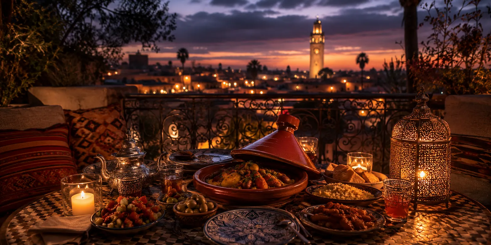
Join a local chef to visit a traditional market before preparing an authentic tagine, Moroccan bread and refreshing mint tea. A friendly experience that lets you discover Marrakech through its flavours and traditions.
🍲 Join the cooking class →Take a seat on a rooftop above the medina and enjoy Moroccan specialities while the sun sets behind the iconic Koutoubia Minaret. A peaceful evening with one of Marrakech's finest views.
🌇 Book the rooftop experience →Step inside the legendary Dar Essalam, set within a historic palace in the medina, and enjoy refined Moroccan cuisine accompanied by musicians, traditional dancers and live performances.
🎭 Discover Dar Essalam →Saffron, cumin, ras el-hanout, olives, dried fruits and colourful mountains of spices awaken the senses at every turn. Marrakech's souks are an essential stop for discovering the flavours behind Moroccan cuisine.
Explore the medina →Take a relaxing break with a glass of mint tea and delicious Moroccan pastries. From the terraces of the medina, watch daily life unfold while enjoying one of the country's most iconic traditions.
Sharing a tagine or couscous in the flower-filled courtyard of a traditional riad is one of Marrakech's greatest pleasures. Generous, fragrant cuisine deeply rooted in Moroccan traditions.
An imperial city with a remarkable heritage, Marrakech reveals magnificent palaces, iconic gardens, lively souks and historic monuments throughout the medina. These essential sights offer a fascinating introduction to the cultural richness of the Red City.
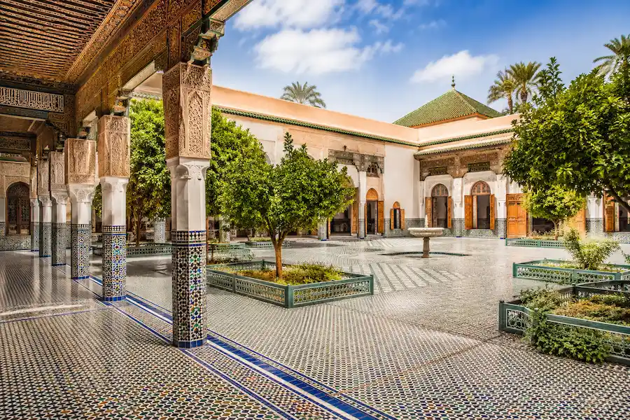
Explore one of Morocco's most beautiful palaces through its flower-filled courtyards, peaceful gardens and magnificent zellige tiles. A masterpiece of Moroccan architecture that reflects the refinement of former royal residences.
🕌 Discover the palace →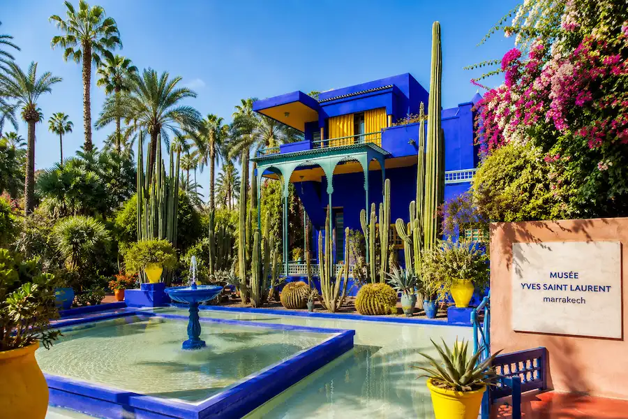
With its famous Majorelle-blue buildings, giant cacti, tranquil pools and the Yves Saint Laurent Museum, this visit offers a peaceful and colourful escape in the heart of Marrakech.
🌴 Visit Majorelle Garden →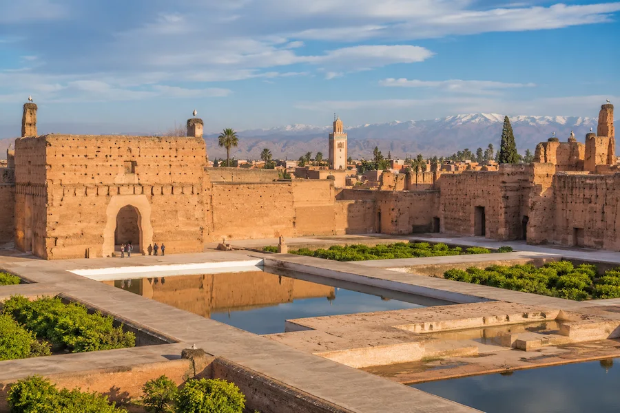
Discover the impressive ruins of El Badi Palace before visiting the famous Saadian Tombs, remarkable reminders of the power of the Saadian dynasty and among Marrakech's finest historic sites.
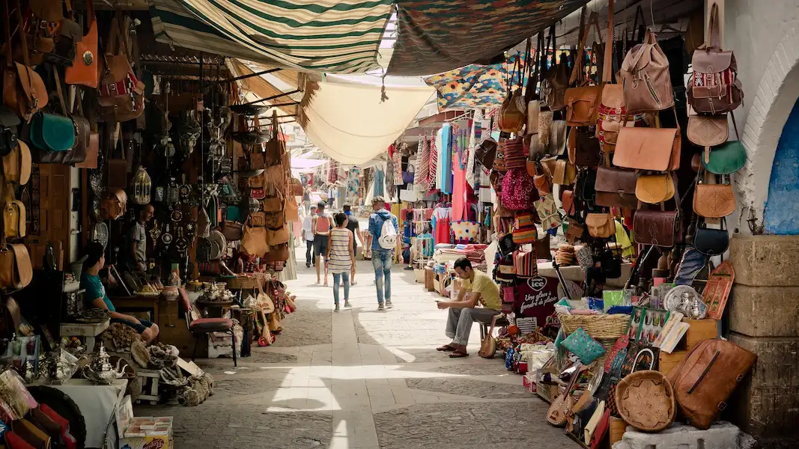
Wander through the colourful alleyways of the medina and discover local artisans, spices, carpets, leather goods and traditional crafts. A fascinating immersion in one of Morocco's most famous markets.
🛍️ Explore the souks →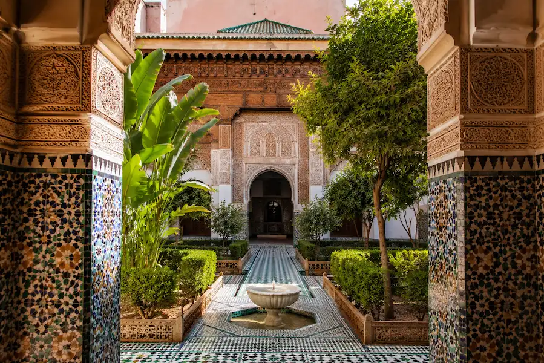
Discover two treasures of the medina, from Andalusian gardens and peaceful fountains to finely carved decorative details. A visit that reveals the elegance and craftsmanship of Moroccan architecture.
🌿 Discover these treasures →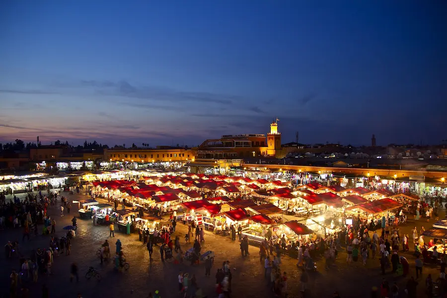
The true beating heart of Marrakech, the square comes alive from morning until late at night with street performers, musicians, storytellers, food stalls and a unique atmosphere recognised by UNESCO as intangible cultural heritage.
Beyond its medina and palaces, Marrakech is also a fantastic playground for adventure seekers. From desert trails and aerial activities to horse riding, cycling and golf courses overlooking the Atlas Mountains, the city offers countless ways to experience Morocco differently.
Set off along the sandy tracks of the Palmeraie before sharing mint tea in a Berber village. A perfect first taste of the desert just outside Marrakech.
🚵 Book the activity →Take the wheel of an SSV buggy and race across the rocky tracks of the Agafay Desert. An ideal activity for thrill seekers and lovers of spectacular landscapes.
🏎️ Discover the buggy experience →Admire the Agafay Desert and the Atlas Mountains from the sky during a tandem flight. An unforgettable way to discover Morocco's landscapes from a completely new perspective.
🪂 Take to the skies →Ride through historic neighbourhoods, gardens and the narrow streets of the medina during a cultural cycling tour. An original and friendly way to discover the city.
🚴 Explore Marrakech →Ride through sandy trails, palm groves and traditional villages while discovering a different side of the landscapes surrounding Marrakech.
🐎 Go horse riding →Enjoy an introductory session or a full round on one of Marrakech's prestigious golf courses, surrounded by lush scenery with the Atlas Mountains in the background.
🏌️ Discover golf in Marrakech →Marrakech is the perfect starting point for exploring some of Morocco's most spectacular landscapes. From the Atlantic coast and the Atlas Mountains to Berber villages, waterfalls and UNESCO-listed kasbahs, every excursion reveals a different side of the country and perfectly complements a stay in the Red City.
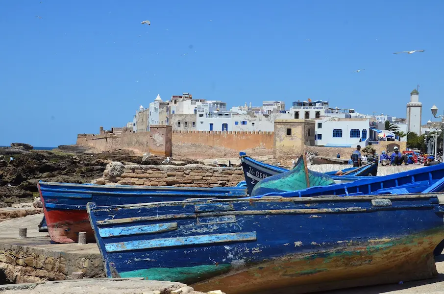
With its lively fishing port, UNESCO-listed ramparts, whitewashed medina and long sandy beach, Essaouira offers a refreshing Atlantic escape just a few hours from Marrakech.
🌊 Discover Essaouira →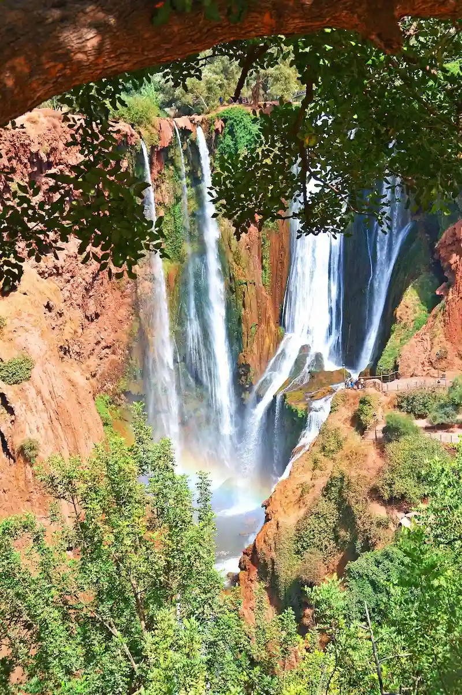
Admire Morocco's highest waterfalls during a day of nature, hiking and a boat ride at the foot of the cascades. You may also spot the famous Barbary macaques living among the surrounding cliffs.
💦 Discover Ouzoud →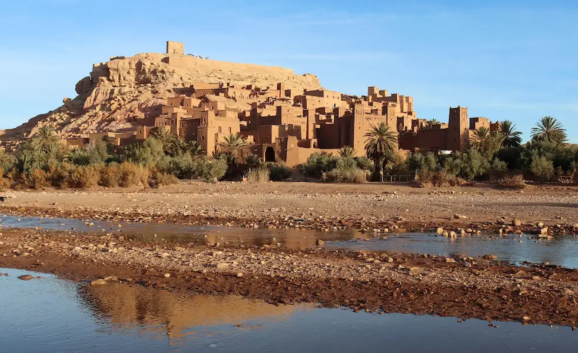
Cross the High Atlas Mountains before discovering the famous UNESCO-listed kasbah of Ait Ben Haddou and the film studios of Ouarzazate, where numerous films and television series were shot.
🏰 Explore the kasbahs →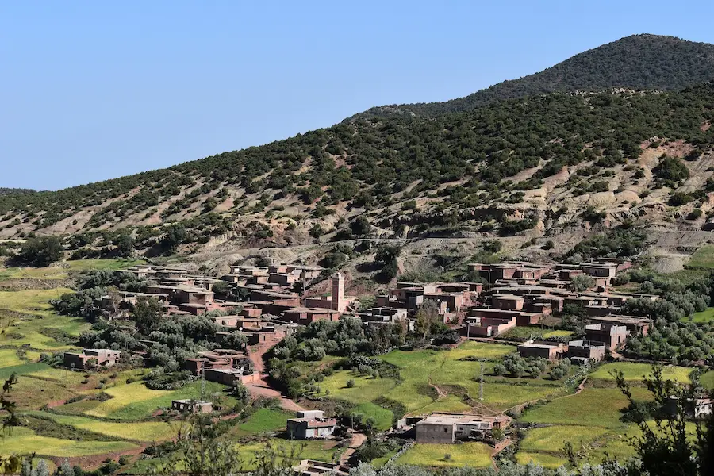
Discover the spectacular landscapes of the High Atlas through the Berber villages of Imlil, green valleys and panoramic views of Mount Toubkal, the highest peak in North Africa.
🏔️ Explore the Atlas Mountains →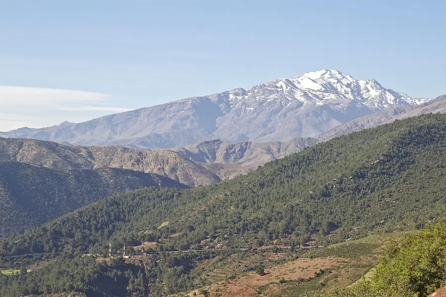
Less than an hour from Marrakech, the Ourika Valley reveals Berber villages, rivers, green terraces and waterfalls reached during a pleasant hike through the Atlas Mountains.
🌿 Discover the Ourika Valley →Moroccan Arabic, known as Darija, and Berber are the most widely spoken languages. French is commonly understood in hotels, restaurants and shops, while English is increasingly spoken in tourist areas.
The local currency is the Moroccan dirham (MAD). Bank cards are accepted in many establishments, but it is advisable to carry some cash for souks, taxis, small shops and tips.
The main sights of the medina are easy to explore on foot. For longer journeys, use official petit taxis or pre-booked transfers to avoid unnecessary negotiations.
Three to four days are enough to visit the main monuments, enjoy the gardens, explore the souks and spend a day on an excursion to the Atlas Mountains, Essaouira or the Ouzoud Waterfalls.
Spring and autumn offer particularly pleasant temperatures. Summer daytime temperatures can exceed 40°C, while winter evenings are often much cooler.
Morocco is a welcoming country where respectful clothing is appreciated, especially in religious places and traditional neighbourhoods. Asking permission before photographing local people is also an important sign of respect.
Bargaining is part of the local culture in the souks. Take the time to compare several shops before buying and keep the exchange friendly and good-natured.
When the meter is not being used, ask for the fare before setting off. Ride-hailing services or pre-booked transfers can also help you avoid unpleasant surprises.
The climate can be very hot for much of the year. Always carry a bottle of water, especially while exploring the medina or taking part in desert excursions.
Some people, particularly performers in Jemaa el-Fna Square or traders in the souks, may expect payment for photographs. Always ask for permission first.
Even in spring, the Moroccan sun can be intense. A hat, sunglasses, sunscreen and regular breaks in the shade will make sightseeing much more comfortable.
Marrakech offers much more than its historic centre. Its gardens, the Palmeraie, Gueliz and the many excursions into the Atlas Mountains or towards the coast reveal the full diversity of the region.
Three to four days are enough to discover the main monuments, gardens, souks and palaces while also allowing time for an excursion beyond the city.
The medina is ideal for experiencing the traditional atmosphere of Marrakech, while Gueliz and Hivernage offer greater comfort, modern restaurants and a livelier nightlife scene.
Yes. Most tourist attractions within the medina are easy to reach on foot. Taxis and organised excursions make it simple to explore the other neighbourhoods and surrounding areas.
March to May and September to November generally offer the best conditions for exploring Marrakech and enjoying outdoor excursions.
Yes, especially for the Majorelle Garden, popular day trips and desert activities, which often sell out during school holidays and weekends.
Yes. Gardens, horse-drawn carriage rides, Atlas Mountain excursions, activities in the Palmeraie and traditional shows provide plenty of family-friendly experiences.
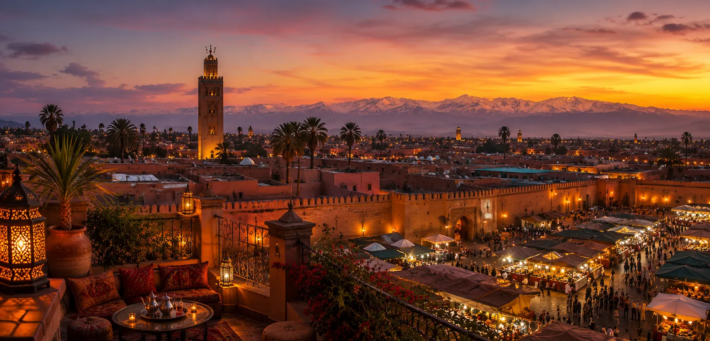